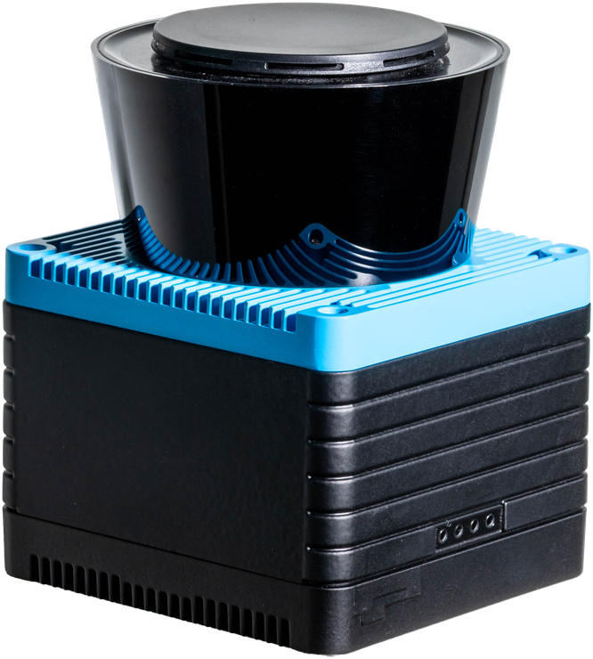
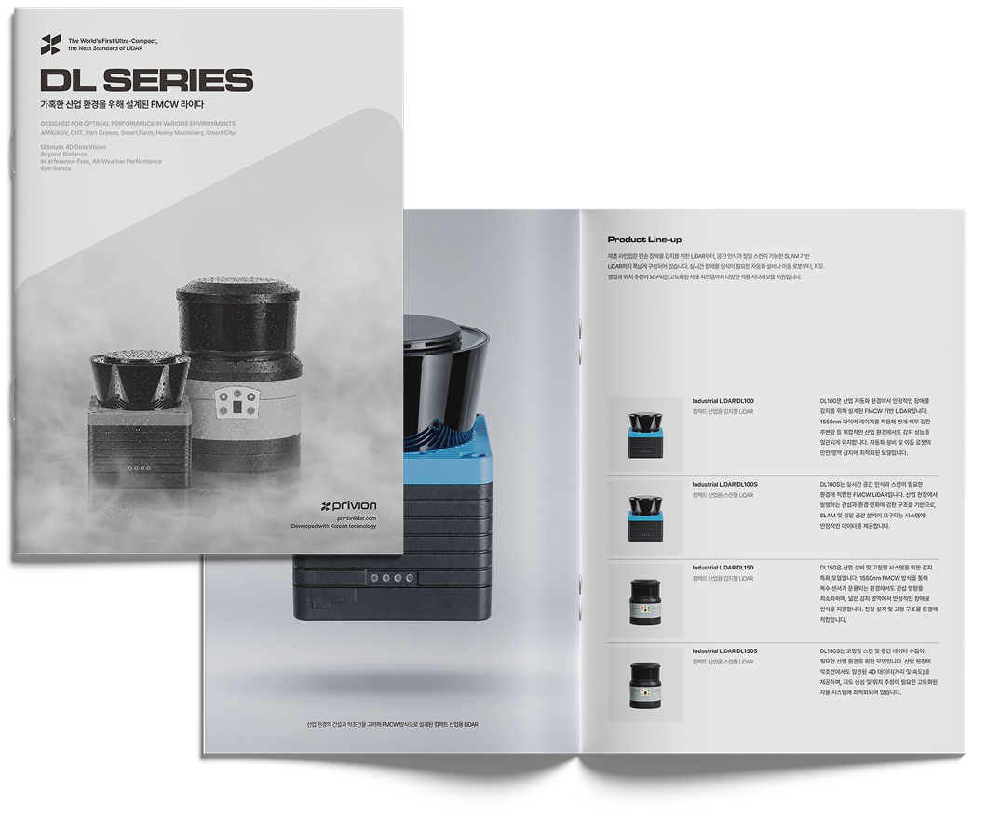

AMR / AGV
실내 물류 및 제조 자동화 환경에서 AMR/AGV의 안정적인 이동을 지원합니다. 이동 경로 내 장애물과 안전 영역을 감지해 반복적인 설비 흐름을 정밀하게 판단할 수 있습니다.
Detection Type
 감지
감지
DL100은 AGV, AMR이 운행되는 실내 자동화 환경에서 장애물을 안정적으로 감지합니다. 분진, 창문을 통해 유입되는 햇빛 등 실내 환경에서 발생할 수 있는 오감지 요인에서도 일관된 성능을 유지하며, 10m 검출 거리로 이동 로봇의 안전 영역 감지에 적합합니다.

| 전원 | ▶ | DC 12 ~ 24V |
|---|---|---|
| 계측 방식 | ▶ | FMCW(Frequency Modulated Continuous Wave) |
| 광원 | ▶ | 1550nm |
| 레이저 등급 | ▶ | Class 1 (Eye-Safe) |
| 수평 시야각 | ▶ | 270° |
| 스캔 주파수 | ▶ | 20Hz |
| 각 분해능 | ▶ | 0.17° ~ 0.35° |
| 검출 거리 | ▶ | 0.2m ~ 10m |
| 인터페이스 | ▶ | RS-232, Ethernet |
| 표시등 | ▶ | 4 LEDs(전원, 동작 상태 표시) |
| INPUT | ▶ | 5 Input / 최대 3개 감지 영역 설정 |
| OUTPUT | ▶ | 4 Output(감지 영역 3, 장애 발생 1) |
| Data In (Ethernet) | ▶ | - |
| Data Out | ▶ | - |
| 보호 등급 | ▶ | IP65 |
| 인증 | ▶ | KC, CE |
| 동작 온도 | ▶ | -10°C ~ +50°C |
| 저장 온도 | ▶ | -25°C ~ +75°C |
| 사이즈 | ▶ | 75(W) × 83(D) × 102(H) mm |
| 무게 | ▶ | 370g |
프리비온의 FMCW LiDAR 제품은 다양한 산업장에서 실제 적용될 수 있도록 각 분야의 구조와 특성을 고려해 설계되었습니다. 실내외 환경에서 필요한 거리와 속도와 같은 검출 조건을 고도화한 FMCW 감지 기술로 복잡하고 정밀한 자동화 환경까지 대응할 수 있습니다. 적용 환경과 요구 사항에 따라 기능 및 사용성이 필요한 구조를 기준으로 구성했습니다.
실내 물류 및 제조 자동화 환경에서 AMR/AGV의 안정적인 이동을 지원합니다. 이동 경로 내 장애물과 안전 영역을 감지해 반복적인 설비 흐름을 정밀하게 판단할 수 있습니다.
정밀 제조 라인을 위한 FMCW LiDAR는 복잡한 설비 환경에서도 높은 감지 성능을 제공합니다. 이송 동선 주변의 장애 요소를 인식해 OHT 시스템의 안정적인 운영을 지원합니다.
스마트시티 환경에서 사람, 차량, 인프라 주변의 움직임을 감지하는 데 활용될 수 있습니다. 복합적인 도심 환경에서도 필요한 감지 체계를 지원합니다.
스마트 톨링 시스템에서 주행 중인 차량을 정확히 검지합니다. 흑색 차량이나 유광, 무광 도장에도 반사 특성에 관계없이 인식하며, 차량의 위치와 폭, 높이를 정확하게 측정합니다.
물류창고와 산업 현장에서 지게차 주변의 장애물과 작업자를 감지합니다. 설정된 감지 구역에 따라 경고와 자동 감속, 정지를 연동하여 충돌 위험을 줄입니다.
제조, 물류, 설비 현장에서 장비 주변의 작업 반경과 장애물을 감지하는 데 활용됩니다. 제한된 공간에서도 안정적인 감지 기준을 제공합니다.
스마트팜 환경은 구조물, 작물, 이동 장비가 함께 존재하기 때문에 안정적인 감지 성능을 필요로 합니다. 반복 주행 장비와 자동화 설비의 안전한 운용을 지원합니다.
대형 구조물과 장비가 함께 운용되는 환경에서 주변 장애물과 작업 영역을 감지할 수 있도록 지원합니다. 장비 운용 시 필요한 안전 감지 체계에 활용됩니다.

프리비온의 기술과 제품 구성을 한눈에 확인할 수 있는 소개 자료입니다. 산업 자동화와 로봇 시스템에 필요한 감지 안정성, 정밀한 센싱 성능, 주요 적용 분야를 함께 살펴볼 수 있으며, 실제 산업 환경을 고려한 기술적 특징과 제품 활용 방향까지 폭넓게 확인할 수 있습니다.
Download